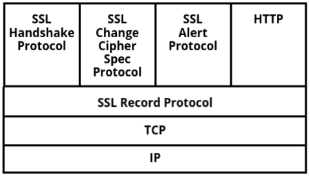

Application Layer Security
- Imagine you’re sending an important email, making an online payment, or logging into your favorite
social media site. Ever wondered what keeps your sensitive information safe from hackers? That’s
where Application Layer Security comes in!
- The application layer is the topmost layer in a network, handling how users interact with
applications like web browsers, email clients, and online banking systems. But since this is where
data is entered, sent, and received, it’s also the layer most exposed to cyber threats like
phishing, data theft, and man-in-the-middle attacks.
- To keep this layer secure, different security mechanisms and protocols are used:
- Secure Electronic Transaction (SET) helps protect online payments and credit card
transactions.
- Email security protocols like PGP (Pretty Good Privacy) and S/MIME encrypt emails to keep
them private and authentic.
- Countermeasures against threats ensure that sensitive information is protected from
unauthorized access.
- By implementing strong security measures at the application layer, we can protect our data from
cyberattacks, ensuring safe and trustworthy online interactions.
Security Threats in the Application Layer
The application layer is where users interact with software applications like web
browsers, messaging apps, and emails.
Since this layer deals directly with users and data, hackers love to target it! Instead of attacking
deeper technical layers,
they try to exploit the software you use every day.
Attackers often send harmful software through emails, messages, or fake websites, tricking users
into opening them.
Once inside, these malicious programs can steal data, modify records, or even control an entire
system.
That’s why understanding security threats in the application layer is crucial.
Common Security Threats at the Application Layer
- Injection Attacks (SQL Injection & Cross-Site Scripting)
- Cross-Site Request Forgery (CSRF)
- Security Misconfigurations
- Denial of Service (DoS) Attacks
- Zero-Day Vulnerabilities
1. Injection Attacks (SQL Injection & Cross-Site Scripting)
Imagine you're logging into a website, and instead of a normal username, a hacker enters a special
piece of code.
If the website isn’t secured properly, the hacker's code can sneak into the system and do things
like viewing confidential data,
modifying records, or even deleting information.
So, an attack where an attacker injects harmful code into an application to
manipulate or steal data is known as an
injection attack. The two common types are:
- SQL Injection: Attackers insert malicious SQL commands into database queries,
allowing them to
steal, modify, or delete sensitive data.
- Cross-Site Scripting (XSS): Hackers inject scripts into websites that later run
in a user’s browser,
potentially stealing login credentials or personal information.
2. Cross-Site Request Forgery (CSRF)
Think about clicking on a link that automatically changes your email password without you even
realizing it.
Sounds scary, right? That’s exactly what a Cross-Site Request Forgery (CSRF) attack
does.
So, an attack where a hacker tricks users into making unwanted actions on a website
where they are already logged in
is called Cross-Site Request Forgery (CSRF). This can be used to transfer money,
change account details, or perform other
actions without the user’s consent.
3. Security Misconfigurations
Have you ever left your phone unlocked and someone played a prank on you? That’s similar to what
happens in
security misconfigurations. If developers forget to secure an application properly,
hackers can take advantage of it.
So, a situation where security settings are not configured properly, allowing
attackers to exploit weaknesses,
is called security misconfiguration. Common mistakes include:
- Using default usernames and passwords (like "admin" and "password").
- Leaving unnecessary features enabled, which hackers can exploit.
- Not updating software, making it vulnerable to known security issues.
4. Denial of Service (DoS) Attacks
Imagine trying to enter a store, but a huge crowd is blocking the entrance, preventing real
customers from getting inside.
That’s what a Denial of Service (DoS) attack does to websites and applications.
So, an attack where hackers flood a system with fake traffic to overload it and
make it unavailable to real users
is called a Denial of Service (DoS) attack. If multiple infected computers are used
to attack, it's called a
Distributed Denial of Service (DDoS) attack.
5. Zero-Day Vulnerabilities
A zero-day vulnerability is like a hidden crack in a locked door that no one has
noticed yet; not even the owner.
Hackers find these security gaps before developers do and exploit them before a fix is available.
So, a security flaw that is unknown to developers and does not yet have a fix is
called a
zero-day vulnerability. Hackers exploit these weaknesses before they are patched,
making them highly dangerous.
Countermeasures to Mitigate Security Risks
Now that we know about the common security threats in the application layer, let’s talk about how we
can protect ourselves from these dangers.
Countermeasures are like safety measures we put in place to reduce or eliminate the risks posed by
cyberattacks.
- Input Validation and Sanitization: Ensures that only the right kind of data is
accepted from users, blocking harmful input like SQL injection or Cross-Site Scripting (XSS).
- Authentication and Authorization: Authentication verifies the identity of
users, while authorization ensures users can only access the resources they’re permitted to.
- Secure Communication Protocols: Protocols like HTTPS encrypt data to prevent
attackers from intercepting sensitive information such as passwords or credit card numbers.
- Regular Patching and Updates: Keeping software updated ensures that any known
vulnerabilities are patched, reducing the risk of exploitation by attackers.
- Firewalls and Intrusion Detection Systems (IDS): Firewalls block unauthorized
access, while IDS alerts administrators to suspicious activity, helping prevent breaches.
- Security Training for Users: Educating users on safe practices, such as
recognizing phishing attempts and avoiding malware, can prevent many attacks.
- Secure Software Development Lifecycle (SDLC): Incorporates security from the
start of the development process, continuously testing the application for vulnerabilities as
it’s being built.
SET (Secure Electronic Transaction)
- When you enter your credit card details on an online shopping site, have you ever thought about
how they stay safe? What if someone intercepts your payment information while it’s being
transmitted? That’s where Secure Electronic Transaction (SET) comes in!
- SET is a security protocol designed specifically for securing online credit card transactions.
Since online payments happen through web applications, they operate at the application layer of
the network. This is the same layer where we use email, browsers, and online services; making it
a major target for cyber threats. If this layer isn't secured properly, attackers can steal
sensitive data like card details, passwords, and personal information.
- To prevent such threats, SET ensures that credit card payments remain encrypted and secure
during transmission. It does this using:
- Encryption – Protects payment details so only authorized parties can read them.
- Authentication – Verifies both the buyer and the seller to prevent fraud.
- Digital Signatures – Ensures that transactions cannot be tampered with.
- By implementing SET at the application layer, we can secure financial transactions directly at
the source, preventing hackers from intercepting sensitive payment information. While SET itself
was not widely adopted due to its complexity, its security principles are still used in modern
online payment systems like 3D Secure (used by Visa & Mastercard), PayPal encryption, and
banking security protocols.
How SET Ensures Secure Transactions
Now that we know SET (Secure Electronic Transaction) is designed to protect online credit card
transactions, let’s see how it actually keeps payments secure. Unlike simple encryption methods, SET
provides a multi-layered security approach to ensure that transactions remain private, authentic,
and tamper-proof.
Here’s how SET ensures secure transactions:
- Encryption of Payment Information :
- When you enter your credit card details, SET encrypts them so that no one; including the
merchant; can see them.
- Only the bank or payment processor can decrypt and process the payment.
- Digital Certificates for Authentication :
- Both the buyer and the merchant have digital certificates issued by a trusted authority
(like Visa or Mastercard).
- This ensures that both parties are verified and legitimate, reducing fraud risks.
- Dual Signature for Data Integrity :
- SET uses a dual signature mechanism, which means:
- The merchant can only see order details (but not your payment info).
- The bank can only see payment details (but not what you purchased).
- This way, your financial data stays private while ensuring a secure transaction.
- Authentication of All Parties :
- SET verifies the identity of all participants in the transaction before processing the
payment.
- This prevents unauthorized users from making fraudulent purchases.
- Prevention of Replay Attacks :
- SET ensures that each transaction is unique and cannot be reused by attackers.
- This prevents hackers from intercepting and resending payment requests.
Together, these steps make SET a strong security framework for online payments. Even though SET
itself isn’t widely used today, its security principles are the foundation of modern online payment
systems.
Applications and Use Cases of SET
SET was specifically designed for secure online transactions, and while it wasn’t widely adopted due
to its complexity, it paved the way for today’s payment security technologies. Here’s where SET (or
its concepts) have been applied:
-
E-commerce Websites
- SET was originally developed for secure online shopping, ensuring that credit card
transactions remain encrypted and verified.
- Today, platforms like Amazon, eBay, and online banking systems use security methods
based on SET principles.
-
Online Banking & Digital Wallets
- Many online banking platforms use encryption and authentication techniques similar to
SET to protect transactions.
- Services like PayPal, Apple Pay, and Google Pay use encryption, authentication, and
secure tokenization, inspired by SET.
-
3D Secure (Visa Secure, Mastercard SecureCode, etc.)
- Modern payment security protocols like 3D Secure (used in Visa, Mastercard, and RuPay
transactions) use multi-factor authentication and encryption; key elements of SET.
- These methods verify the user before completing the payment.
-
Secure Government and Corporate Transactions
- Government agencies and financial institutions use SET-like encryption and
authentication when handling sensitive transactions.
Even though SET itself didn’t become the global standard, its encryption, authentication, and
verification methods continue to shape the way we secure digital transactions today.
Electronic Mail Security
- Sending emails is something we all do daily; whether it’s for work, personal communication, or
even online shopping updates. But have you ever thought about how secure those emails are? Since
email is one of the most widely used communication tools, it’s also a primary target for cyber
threats like phishing, unauthorized access, and data theft.
-
Electronic Mail Security focuses on protecting the content of emails, ensuring confidentiality,
integrity, and authentication. It’s crucial because an insecure email system can lead to data
breaches, identity theft, and fraud. Just imagine receiving a phishing email that looks just
like a legitimate bank request; without proper security measures, you might fall for it.
- To prevent such threats, several security protocols and technologies have been developed:
- Encryption protects the content of the email so only the intended recipient can read it.
- Digital Signatures verify the identity of the sender, ensuring the email hasn’t been
tampered with.
- Authentication protocols like SPF (Sender Policy Framework) and DKIM (DomainKeys
Identified Mail) help verify that the sender is who they claim to be.
- By ensuring emails are securely transmitted, we can protect sensitive information from being
accessed by unauthorized parties. Let’s dive into how these email security protocols work and
how they help keep your messages safe!
Email Security Threats
Just like other forms of online communication, email comes with its own set of security risks. Since
email is widely used for personal and business communication, attackers often target it to steal
information or spread malware. Here are some common email security threats:
- Phishing: Imagine receiving an email that looks like it's from your bank,
asking you to click a link and update your account details. Phishing emails are designed to
trick you into revealing personal information like passwords or credit card numbers. They often
look legitimate but are actually sent by attackers trying to steal your data.
- Malware: Emails can carry malicious software (malware) that can infect your
computer. These emails often contain attachments or links that, when clicked, download harmful
software like viruses, ransomware, or spyware to your system. The malware can steal data, damage
files, or even lock you out of your own computer.
- Spam: Unsolicited emails, also known as spam, can clutter your inbox and
sometimes contain dangerous links or attachments. While not always malicious, spam emails can
overwhelm your inbox and make it harder to spot important or legitimate messages.
- Business Email Compromise (BEC): In a Business Email Compromise attack, an
attacker impersonates a company executive or trusted partner and sends fraudulent emails to
employees, asking them to transfer funds or share confidential information. These attacks can
lead to significant financial losses.
- Email Spoofing: Email spoofing occurs when a hacker falsifies the "From"
address of an email, making it appear as though it was sent by someone else—like a colleague or
a trusted entity. This trick is used to gain trust and encourage recipients to take actions they
otherwise wouldn't, such as clicking on harmful links.
Methods for Securing Emails
Now that we know the threats, let's talk about how we can protect ourselves and our email accounts.
Securing your email is crucial for safeguarding personal and sensitive information. Here are some
effective methods to secure your emails:
- Use Strong Passwords and Two-Factor Authentication (2FA): A strong password is
the first line of defense for your email account. Combine it with two-factor authentication
(2FA), which requires you to enter a second verification code (usually sent to your phone) in
addition to your password. This makes it much harder for hackers to gain access, even if they
know your password.
- Encrypt Your Emails: Email encryption ensures that only the sender and the
recipient can read the contents of the message. Even if an attacker intercepts the email, they
won’t be able to understand it. Encryption can be done using protocols like PGP (Pretty Good
Privacy) or S/MIME (Secure/Multipurpose Internet Mail Extensions).
- Be Cautious with Attachments and Links: Don’t open attachments or click on
links in unsolicited emails, especially if the message seems suspicious or is from an unknown
sender. If you’re unsure, always verify the email with the sender through a different
communication channel.
- Spam Filters: Many email providers offer spam filters that automatically flag
suspicious emails and move them to a separate folder. Using these filters helps keep your inbox
clean and reduces the risk of falling for phishing scams or opening harmful attachments.
- Regular Software Updates: Ensure that your email software and antivirus
programs are regularly updated. Software updates often include security patches that fix known
vulnerabilities, making it harder for attackers to exploit them.
- Use Secure Email Services: Some email services, such as ProtonMail and
Tutanota, offer built-in end-to-end encryption, which ensures that only you and the intended
recipient can read your messages. These services provide an extra layer of security compared to
standard email providers.
Pretty Good Privacy (PGP)
- When you send an important email, like a job application or a confidential business proposal,
how can you be sure that no one intercepts it along the way? That’s where Pretty Good Privacy
(PGP) comes in!
- PGP is a popular encryption and authentication method that helps protect the privacy of email
communication. It ensures that only the intended recipient can read your message and guarantees
that the message hasn’t been altered during transit. It’s called "Pretty Good Privacy" because
while it might not be the absolute strongest encryption, it’s still incredibly effective for
keeping emails secure.
- In a nutshell, PGP makes sure your emails are private, authentic, and safe from tampering.
How PGP Works (Encryption and Digital Signatures)
Now that we know what Pretty Good Privacy (PGP) is, let’s dive into how it actually protects
emails and files.
PGP works by combining encryption (which keeps messages private) and
digital signatures (which verify who sent the message).
This means your communication remains both confidential and tamper-proof.
- Encryption in PGP – Locking Your Message with a Key:
Imagine you’re sending a sealed letter to a friend. You don’t want anyone
else to open it, so you lock it inside a box.
But here’s the twist: only your friend has the key to unlock it!
That’s exactly how PGP encryption works. It uses something called
public-key cryptography, where every user has two keys:
- Public Key: This is like a lock that anyone can use to
secure a message for you.
- Private Key: This is the only key that can unlock the
message, and you keep it secret.
So, when you send an email using PGP:
- You use the recipient’s public key to encrypt the message. Think of it
as locking the box with their unique padlock.
- Once locked, no one—not even you—can open it.
- Only the recipient can decrypt the message using their private
key (which matches the public key).
This ensures that even if hackers intercept the email, all they see is a
meaningless jumble of characters. Without the private key, the message is unreadable!
- Digital Signatures in PGP – Verifying the Sender:
Encryption keeps messages private, but how do we know the message is really from the sender
and hasn't been changed?
That’s where digital signatures come in.
Imagine you receive an important email from your bank. How do you know it’s real and not
from a scammer?
A digital signature acts like a seal of authenticity,
proving the message is truly from the sender.
Here’s how it works:
- Before sending an email, PGP creates a unique fingerprint of the
message (called a hash).
- PGP then encrypts this fingerprint using the sender’s private key,
creating a digital signature.
- When the recipient gets the email, their PGP software uses the sender’s public
key to check the signature.
- If the signature is valid, it confirms the message hasn’t been altered and is
really from the sender.
So, encryption protects the message, while digital signatures
verify the sender. This double-layer protection makes PGP
one of the most powerful security tools available.
In short, PGP is like a locked box with a seal: only the intended recipient can
open it, and the seal ensures that no one tampered with it along the way.
That’s how emails, files, and even software updates stay secure and trustworthy.
PGP in Practice
Now that we understand how PGP works, let's talk about how it's actually used in real
life.
While the technical details may sound complex, many tools automate PGP, making it
easier to use.
- 1. Secure Email Communication – Keeping Messages Private:
Many people use PGP to encrypt their emails to keep their conversations
private.
This is especially useful for journalists, activists, and businesses that need to protect
sensitive information.
Some privacy-focused email providers like ProtonMail and
Tutanota have built-in PGP encryption.
This means that when two people using the same service send emails to each other, the
messages are automatically encrypted and decrypted.
- 2. File Encryption – Protecting Sensitive Data:
PGP isn’t just for emails! It can also encrypt files and
folders to protect confidential data.
Businesses use it to secure financial documents, personal records, and backup files.
Imagine you store all your passwords in a text file. If someone gets access to it, they
could steal your information.
But if you encrypt the file with PGP, only you can open it using your
private key.
- 3. Verifying Software Authenticity – Preventing Fake Updates:
Have you ever downloaded a software update and wondered, "Is this real or could it be
malware?"
Hackers sometimes create fake updates that install viruses on your system.
To prevent this, developers use PGP signatures to sign their software
updates.
Before installing, users can verify the signature to confirm that the
update is genuine and unaltered.
Many open-source projects (like Linux distributions and cryptocurrency
wallets) rely on PGP to ensure security.
- 4. Protecting Sensitive Conversations – Secure Messaging:
Some encrypted messaging apps also use PGP-style encryption to keep
conversations safe.
This is popular in industries like finance, law, and cybersecurity, where
privacy is critical.
For example, whistleblowers often use PGP to anonymously communicate with
journalists, ensuring their messages aren’t intercepted.
- 5. Using PGP with Keyservers – Sharing Public Keys:
If you want people to send you encrypted emails, they need your public key.
Instead of emailing it to each person, you can upload it to a PGP
keyserver.
Keyservers (like MIT’s PGP Keyserver) act like phone books for public keys.
Anyone who wants to send you an encrypted message can look up your public key and use it.
While PGP can seem complicated at first, many modern tools make it easy to use.
As digital privacy becomes more important, PGP remains one of the best ways to secure
emails, files, and sensitive data.
S/MIME (Secure/Multipurpose Internet Mail Extensions)
- Emails have come a long way from simple text-based communication to a powerful tool that can
handle documents, images, audio, and even video attachments. But in the early days, email
systems were very limited.
- Previously, emails could only be sent in NVT (Network Virtual Terminal) 7-bit ASCII
format.
- This meant that non-text data like images, audio, and videos could not be sent via
email.
-
Everything had to be in plain text, which made email very restrictive.
- To solve this problem, MIME (Multipurpose Internet Mail Extensions) was introduced, allowing
emails to support attachments, multimedia files, and non-ASCII text. However, MIME alone does
not provide security—it only enables file attachments.
- That’s where S/MIME (Secure/MIME) comes in! S/MIME builds upon MIME and adds security features
like encryption and digital signatures to protect emails from being intercepted, altered, or
forged.
Key Features of S/MIME
S/MIME enhances email security by offering two major features:
- Encryption – Protecting Email Content :
- Encryption ensures that only the intended recipient can read the email. If a hacker
intercepts the email, they won’t be able to understand its contents.
- S/MIME uses asymmetric encryption, which involves two keys:
- A public key (used to encrypt the email before sending).
- A private key (used by the recipient to decrypt the email).
- Even if someone gains access to the email during transmission, they won’t be
able to read it without the private key.
- This protects confidential information, making S/MIME a great choice for
businesses, financial institutions, and government communications.
- Digital Signatures – Verifying Sender Identity
- A digital signature ensures that the email is genuine and untampered. It helps verify
that:
- The email actually came from the sender and wasn’t forged by an attacker.
- The email was not modified after being sent.
- How it works:
- The sender signs the email with their private key.
- The recipient verifies the signature using the sender’s public key.
- If anything in the email has changed, the signature will fail verification,
alerting the recipient to possible tampering.
Because of this, digital signatures help prevent phishing attacks, email forgery, and
unauthorized alterations.
Functions of S/MIME
S/MIME provides several security functions that protect email communication:
- Authentication – Verifies that the sender is genuine and not an imposter. This helps prevent
email spoofing and phishing attacks, where attackers send fake emails pretending to be trusted
sources.
- Message Integrity – Ensures that an email has not been altered in transit. Even if someone
intercepts it, they cannot modify its content without detection.
- Non-repudiation – Prevents the sender from denying that they sent an email. Since emails are
signed using a digital certificate, the sender cannot later claim they didn’t send it.
- Privacy & Data Security – Encrypts the email so that only the intended recipient can read it. If
a hacker intercepts the message, they won’t be able to decrypt its contents.
Why is S/MIME Important?
- With rising cyber threats like phishing, email tampering, and identity spoofing, using S/MIME is
crucial for organizations and individuals who deal with sensitive information. Unlike PGP (which
requires manual key exchange), S/MIME relies on trusted certificate authorities (CAs) to manage
encryption keys, making it more user-friendly and widely adopted in corporate environments.
- By ensuring confidentiality, integrity, and authentication, S/MIME plays a critical role in
securing modern email communication!
Introduction to Transport Layer Security (TLS)
When you visit a website, enter your password, or make an online payment, how can you be sure that your
data isn't intercepted by hackers? That’s where Transport Layer Security (TLS) comes in!
But before we dive into TLS, it’s important to understand its predecessor, Secure Socket Layer (SSL). SSL
was the first widely-used protocol for securing online communications, but it had several
vulnerabilities. TLS was introduced as a more secure, updated version of SSL. So, before we get into
TLS, let’s take a quick look at SSL to see how it led to the development of TLS.
What is the Transport Layer?
The Transport Layer is one of the key layers in the OSI (Open Systems Interconnection) model, responsible
for managing the transmission of data between devices over a network.
Think of the internet like a postal system:
- The Application Layer (e.g., web browsers, email apps) prepares the message you want to send.
- The Transport Layer ensures that the message is delivered correctly, completely, and in the right
order to the receiver.
The two main protocols used in the Transport Layer are:
- TCP (Transmission Control Protocol): Ensures reliable, error-free communication.
It’s used in things like web browsing, emails, and online banking.
- UDP (User Datagram Protocol): Faster but less reliable, often used in streaming,
gaming, and VoIP calls.
Because the Transport Layer handles sensitive user data, it's a prime target for cyber attacks, such as
eavesdropping, data modification, and man-in-the-middle (MITM) attacks. This is where Transport Layer
Security (TLS) comes in—to protect this data from being intercepted or altered.
What is Transport Layer Security (TLS)?
TLS (Transport Layer Security) is the modern protocol that encrypts and authenticates communication
between two devices over the internet. It’s the successor to SSL (Secure Socket Layer), which was the
first widely-used protocol for securing online communications but was eventually replaced due to
security vulnerabilities.
To understand the difference:
- SSL was developed to ensure that web traffic (like HTTP) could be secured. However, over time, SSL
had several security flaws and became less reliable.
- TLS is the updated version that fixes those vulnerabilities, offering stronger encryption and more
robust security measures.
Imagine sending a sealed, tamper-proof envelope instead of a postcard—even if someone intercepts it, they
won’t be able to read its contents. That’s exactly what TLS does for internet traffic!
TLS ensures that:
- Data remains private: Encryption ensures that only the sender and the intended
recipient can understand the transmitted information.
- Data is not altered: Integrity checks make sure that no one has tampered with the
message during transmission.
- The sender is authentic: Authentication verifies that the website or service you’re
communicating with is actually who they claim to be.
Why is TLS Important?
Without TLS, cybercriminals can:
- Intercept passwords, credit card details, and personal data while they are transmitted over the
network.
- Modify messages between two communicating parties without detection.
- Impersonate websites to trick users into entering sensitive information (phishing attacks).
TLS is the foundation of secure web browsing (HTTPS), online banking, secure email communication, VPNs,
and more.
In addition to securing standard web traffic, a special version called Wireless Transport Layer Security
(WTLS) is designed for wireless networks, like mobile devices and IoT (Internet of Things) devices.
By implementing TLS and WTLS, we can keep our online activities safe from cyber threats, making the
internet a more secure place for everyone!
Now that we've laid the foundation of TLS, we can delve deeper into SSL and its evolution into TLS. After
that, we'll explore how TLS works and the handshake process that makes secure communication possible.
Secure Socket Layer (SSL)
- What is SSL?
SSL (Secure Socket Layer) is a cryptographic protocol designed to provide secure communication
over a computer network, primarily the internet. When two parties (like a user and a web server)
are communicating, SSL ensures that the message is not altered, intercepted, or read by any
third party during transmission. It creates a secure channel between the sender and the
receiver, making the data travel safely from User A to User B.
- Key Features of SSL
: SSL ensures three main principles of security:
- Integrity: Ensures that the data being transferred is not tampered with
during transit.
- Authentication: Verifies that the parties involved in the communication
are who they claim to be (i.e., the server is actually the one it's supposed to be).
- Confidentiality: Ensures that the data being transferred is encrypted,
so no unauthorized third parties can read it.
- Where SSL Works in the Network
SSL operates between the Application Layer and the Transport
Layer in the TCP/IP model (which is the 4th layer in the OSI
model). Specifically, it secures the communication channels in applications like web browsers
(HTTPS), email systems (SMTPS), and more. SSL wraps the data with encryption before it's passed
on to the lower layers for transport.
Protocol Stack of SSL
The SSL protocol stack consists of multiple layers, each responsible for different parts of the
communication process. This stack is designed to ensure that secure data transmission is
achieved by
encrypting and authenticating the communication between two devices. Below is an overview of the
SSL
protocol stack, showing the basic function of each protocol:
1. The Beginning – SSL Handshake Protocol
Imagine you’re entering a secure building. Before you’re allowed in, security personnel check
your identity and give you a special access card to move safely inside.
This is exactly what the SSL Handshake Protocol does when a client and server
connect.
- The client and server exchange cryptographic keys to establish a secure connection.
- The server presents its SSL certificate (issued by a trusted authority) to
prove its authenticity.
- Both parties agree on the encryption methods they will use.
- A secret key is generated and shared securely, which will be used for encrypting further
communication.
In simple terms, the handshake ensures that both sides trust each other before
they start exchanging sensitive data.
2. Locking the Conversation – Change Cipher Spec Protocol
Up until now, all the communication was happening in plaintext. But what's the point of setting
up encryption if we don’t actually start using it?
This is where the Change Cipher Spec Protocol comes in.
- It informs both the client and server: "From this point forward, all data will be
encrypted!"
- This marks the transition from an unencrypted session to a fully secure, encrypted session.
- Without this step, data would still be vulnerable, even after a successful handshake.
3. Ensuring Smooth & Secure Communication – SSL Record Protocol
Now that encryption is enabled, we need a structured way to send and receive messages without
losing data integrity.
The SSL Record Protocol ensures this by:
- Breaking large messages into manageable-sized chunks called records.
- Encrypting each record before sending it over the network.
- Adding an integrity check to verify that the data hasn’t been altered during transmission.
Think of it as securely packaging and labeling each letter before sending it in a courier,
ensuring that nothing gets lost or tampered with along the way.
4. Detecting Issues – Alert Protocol
What if something goes wrong? Like an expired SSL certificate or a failed encryption attempt?
That’s where the Alert Protocol helps.
- If an issue arises, this protocol sends an alert message to inform both the
client and server.
- Alerts can be warnings (e.g., "Certificate is about to expire") or
fatal (e.g., "Invalid encryption detected, terminating session").
- If a fatal alert occurs, the secure session is immediately shut down to prevent any security
risks.
5. The Foundation – TCP/IP
Before SSL even comes into play, the internet relies on TCP/IP to send data
across the network.
SSL is built on top of TCP to add encryption and security.
- TCP ensures reliable data transfer, making sure no packets are lost or
arrive out of order.
- IP is responsible for routing data to the correct destination.
- SSL takes care of security on top of these transport functions, ensuring data remains
private and secure.
6. The Final Layer – HTTP and HTTPS
Finally, SSL works with the HTTP protocol to create a secure version known as
HTTPS.
This ensures:
- Your communication with a website is encrypted and protected from attackers.
- You are connected to the real website and not a fake one (preventing phishing attacks).
- Web browsers show a padlock icon in the address bar when a site uses HTTPS.
Conclusion
The SSL protocol stack is a step-by-step process where each component plays a vital role.
It starts with the SSL Handshake to establish trust, then moves to
Change Cipher Spec to enable encryption, followed by Record
Protocol for secure data transmission.
If anything goes wrong, the Alert Protocol notifies both sides.
All of this runs on top of TCP/IP to ensure reliable delivery and works with
HTTP to create HTTPS for secure web browsing.
This protocol stack shows how SSL operates over the Internet to secure data communication. The
stack
builds on the basic functions provided by TCP/IP and HTTP by adding security features through
SSL.
Each protocol in the SSL stack plays a critical role in ensuring the confidentiality, integrity,
and
authentication of the communication.

SSL Handshake Protocol – How a Secure Connection is Established
Imagine you’re making an online payment. You enter your credit card details, hit "Pay," and
expect that your data is safe.
But how does your browser ensure that the website is real and your details aren’t stolen?
This is where the SSL Handshake Protocol comes in. It is the first step in securing
communication between your browser (client) and the website’s server.
Before any actual data is sent, both parties need to agree on security rules and exchange
encryption keys.
Think of it like a secret conversation:
Before sharing secrets, two people agree on a language (protocol), a secret code (encryption
key), and confirm that neither is an imposter (authentication).
Steps of the SSL Handshake
The SSL handshake happens in four main phases:
- Client Hello & Server Hello: Client and server introduce themselves and agree on security
settings.
- Server Authentication & Certificate Exchange: Server proves it is real by showing a digital
certificate.
- Key Exchange & Session Key Generation: A secret key is shared to encrypt further
communication.
- Change Cipher Spec & Finished Message: Both confirm encryption is active, and secure
communication begins.
Client Server
| |
| --- Client Hello ------------> | (Phase 1: Client Initiates the Connection)
| |
| <--- Server Hello ------------ | (Phase 2: Server Responds & Sends Certificate)
| <--- Server Certificate ------ |
| |
| --- Pre-Master Secret -------> | (Phase 3: Key Exchange)
| |
| --- Change Cipher Spec ------> | (Phase 4: Secure Communication Begins)
| <--- Change Cipher Spec ------ |
| --- Finished Message --------> |
| <--- Finished Message -------- |
| |
(* Secure Communication Begins *)
1. Client Hello & Server Hello – Introduction
This is where the client (browser) and the server (website) start communicating and agree on how
they will secure their connection.
- Client Hello: The client sends a message to the server with:
- Its supported SSL/TLS versions (e.g., TLS 1.2, TLS 1.3).
- A list of encryption methods (cipher suites) it can use.
- A random number (used later for key generation).
- Server Hello: The server responds with:
- The chosen SSL/TLS version (must match one of the client’s options).
- The cipher suite it will use for encryption.
- Another random number (used for session key generation).
This step ensures both sides understand each other and can proceed with security.
2. Server Authentication & Certificate Exchange
Now that the client and server have agreed on how to communicate, the server must prove its
identity to prevent fraud.
This is done using a digital certificate.
- The server sends its SSL certificate, which contains:
- The server’s public key (used for encryption).
- The website’s identity (so users know they are talking to the real site).
- A signature from a trusted Certificate Authority (CA) to prove its authenticity.
- The client verifies the certificate to ensure it is valid and not fake.
This step prevents attackers from pretending to be a real website.
3. Key Exchange & Session Key Generation
Now that the client trusts the server, both sides need a shared secret key to encrypt their
messages.
- The client creates a random secret (pre-master secret).
- It encrypts the secret using the server’s public key (so only the server can read it).
- The encrypted secret is sent to the server.
- Both client and server use the pre-master secret and the random numbers (from Phase 1) to
create the final session key.
This session key will now be used to encrypt all future communication between the client and the
server.
4. Change Cipher Spec & Finished Message
Now that both sides have a shared session key, they officially switch to encrypted
communication.
- The client sends a Change Cipher Spec message, saying:
"From now on, everything I send will be encrypted."
- The server responds with its own Change Cipher Spec message.
- Both send a Finished message, confirming the handshake was successful.
At this point, the secure session is established. Now, all data exchanged (passwords, card
details, messages) is encrypted.
Why is the SSL Handshake Important?
Without the SSL handshake, cybercriminals could:
- Steal sensitive data (passwords, credit card info).
- Modify messages between two parties (MITM attacks).
- Impersonate websites to trick users (phishing attacks).
With SSL/TLS, all data is secure, encrypted, and verified before it’s sent over the internet.
SSL Record Protocol
The SSL Record Protocol handles the secure transmission of data between the client and server. It
breaks down data from the Application Layer, encrypts it, and ensures the integrity of the
message. Here's a breakdown of the steps involved:
Steps in SSL Record Protocol:
- Fragmentation:
- Large data from the Application Layer (such as HTTP data or other application data)
is divided into smaller fragments.
- This is done to ensure that the data is manageable and can be handled efficiently.
- Compression (Optional):
- After fragmentation, the data may be compressed. Compression is optional but helps
reduce the size of the data being transmitted.
- This step improves the efficiency of data transmission over the network.
- MAC Addition:
- A Message Authentication Code (MAC) is added to the data to ensure integrity and
authenticity.
- The MAC helps verify that the data hasn't been altered during transmission and
ensures the integrity of the message.
- Encryption:
- The data, after being fragmented, compressed, and having the MAC added, is then
encrypted.
- This ensures that even if someone intercepts the data, they won’t be able to read or
manipulate it without the proper decryption key.
- SSL Header:
- A header is added to the data. The header contains control information necessary for
the SSL/TLS connection, such as the version of SSL, type of data, and the length of
the encrypted data.
- This helps the receiving party to correctly interpret and process the encrypted
data.
Introduction to Transport Layer Security (TLS)
When you browse a website, make an online payment, or send sensitive information over the internet,
you want to make sure that your data is safe from prying eyes. Transport Layer Security (TLS) is
what keeps that communication secure.
But here's the thing: TLS didn’t just appear out of nowhere. It was actually developed as a successor
to SSL (Secure Socket Layer), a protocol that was used to secure internet communication before TLS.
SSL had some vulnerabilities that could be exploited by attackers, and that's why TLS was introduced
to address those security flaws and provide stronger protection for online communications.
Problems with SSL
While SSL was revolutionary at its time, it eventually became outdated because of several key
security issues:
- Vulnerabilities in SSL Handshake: SSL 2.0 had flaws in the handshake process
that could allow attackers to intercept and modify messages during communication. Although SSL
3.0 improved this, it still had vulnerabilities, especially with certain encryption algorithms.
- Weak Encryption: Older SSL versions allowed the use of weak encryption
algorithms, making it easier for attackers to decrypt data. Over time, cryptographic research
revealed these algorithms were no longer secure enough for protecting sensitive information.
- POODLE Attack: The POODLE (Padding Oracle On Downgraded Legacy Encryption)
attack targeted SSL 3.0 by exploiting the way the protocol handled padding. This made SSL 3.0
particularly vulnerable, and it was one of the key reasons why SSL was eventually phased out.
- Deprecation of SSL Ciphers: As technology evolved, many of the ciphers
supported by SSL were considered insecure. SSL couldn't keep up with modern cryptographic
standards, making it unsuitable for today’s secure communications.
So, Why Do We Need TLS?
TLS is responsible for securing communication between two systems (like a web browser and a website).
It does this by:
- Encrypting the data: Ensuring that even if someone intercepts it, they can’t
read it.
- Authenticating the identity of the server (and sometimes the client): Making
sure that both parties are who they say they are.
- Ensuring data integrity: Meaning the data hasn’t been altered during transit.
Key Difference Between SSL and TLS
You may have heard the term SSL being used, but when we talk about modern secure communication, we
are mostly referring to TLS, not SSL. While they have similar goals, TLS has improved security over
SSL and is now the standard. In fact, the term "SSL" is often still used in conversation (e.g., "SSL
certificates"), but what people really mean today is TLS.
The main difference is that TLS is more secure, and it addresses the weaknesses that existed in SSL.
As a result, SSL has been officially deprecated and replaced by TLS.
TLS Handshake Protocol – How a Secure Connection is Established
Every time you make an online purchase or send sensitive data over the internet, you trust that
the connection is secure and that your information is safe. But how does your browser and the
server make sure that no one is intercepting or tampering with your information?
The **TLS Handshake Protocol** is the first step in establishing a secure connection. It ensures
that both the client (your browser) and the server agree on how to communicate securely before
any sensitive data is exchanged.
Think of it as a secret handshake: before sharing private information, two parties meet, agree
on a language (protocol), decide on a secret code (encryption keys), and confirm that neither
one is an imposter.
Steps of the TLS Handshake
The TLS handshake happens in several key phases:
- Client Hello & Server Hello: Client and server introduce themselves and agree on security
parameters.
- Server Authentication & Certificate Exchange: Server proves its identity by sending a
digital certificate.
- Key Exchange & Session Key Generation: A shared secret is exchanged to establish a secure
communication channel.
- Change Cipher Spec & Finished Message: Both sides confirm encryption is active, and secure
communication begins.
Client Server
| |
| --- Client Hello ------------> | (Phase 1: Client Initiates the Connection)
| |
| <--- Server Hello ------------ | (Phase 2: Server Responds & Sends Certificate)
| <--- Server Certificate ------ |
| |
| --- Pre-Master Secret -------> | (Phase 3: Key Exchange)
| |
| --- Change Cipher Spec ------> | (Phase 4: Secure Communication Begins)
| <--- Change Cipher Spec ------ |
| --- Finished Message --------> |
| <--- Finished Message -------- |
| |
(* Secure Communication Begins *)
1. Client Hello & Server Hello – Initial Agreement
The first step in the handshake involves the client (your browser) and the server agreeing on
how they will communicate securely.
- Client Hello: The client sends a message to the server with:
- The TLS version it supports (e.g., TLS 1.2, TLS 1.3).
- A list of cipher suites (encryption methods) it can use.
- A random number, which will later be used for generating the session key.
- Server Hello: The server responds with:
- The chosen TLS version (must match one of the client’s options).
- The cipher suite it will use for encryption.
- Another random number to help in key generation.
This step ensures both sides are on the same page and can communicate securely.
2. Server Authentication & Certificate Exchange
Now that the client and server have agreed on how they will communicate, the server needs to
prove its identity to the client. This is done using a digital certificate issued by a trusted
Certificate Authority (CA).
- The server sends its SSL/TLS certificate, which contains:
- The server’s public key (used for encrypting data).
- Details of the server’s identity, proving it’s the legitimate website.
- A signature from a trusted CA, confirming the certificate is authentic.
- The client verifies this certificate by checking that it is valid, not expired, and issued
by a trusted CA.
This step prevents attackers from impersonating the server and ensures that you are communicating
with the correct website.
3. Key Exchange & Session Key Generation
With the server’s identity confirmed, the next step is exchanging a secret key to encrypt future
messages.
- The client generates a random pre-master secret (a temporary secret key).
- It encrypts the pre-master secret using the server’s public key (so only the server can
decrypt it).
- The encrypted pre-master secret is sent to the server.
- Both the client and the server use the pre-master secret, along with their random numbers
from Phase 1, to generate the session key. This session key will be used to encrypt all
future communication.
Now, both the client and the server share a session key that will be used for secure
communication.
4. Change Cipher Spec & Finished Message
Now that both sides have the same secret session key, they switch to encrypted communication.
- The client sends a Change Cipher Spec message, telling the server, "I’m now going to send
encrypted data."
- The server responds with its own Change Cipher Spec message.
- Both the client and the server send a Finished message, confirming the handshake was
successful and encryption is active.
Now the secure communication channel is established, and all data exchanged between the client
and server will be encrypted and protected.
Why is the TLS Handshake Important?
Without the TLS handshake, attackers could:
- Intercept sensitive data like passwords, credit card details, or personal information.
- Modify messages between the client and server (Man-in-the-Middle attacks).
- Impersonate websites and trick users into submitting sensitive information (phishing
attacks).
The TLS handshake prevents all of these risks, ensuring that both sides can securely exchange
data without the fear of interception or tampering.
Difference between SSL and TLS
Both SSL (Secure Sockets Layer) and TLS (Transport Layer Security) are cryptographic protocols used
to secure communication between a client and a server, primarily over the internet. However, TLS is
a more secure and efficient version of SSL. Let's break it down:
1. Protocol Versions:
- SSL: SSL has multiple versions, the most well-known being SSL 2.0 and SSL 3.0.
Both are now considered obsolete and insecure due to vulnerabilities.
- TLS: TLS is the successor to SSL. The first version, TLS 1.0, was released as a
more secure version of SSL 3.0. TLS has evolved with newer versions, including TLS 1.1, TLS 1.2,
and the latest, TLS 1.3. TLS versions are more secure and efficient than SSL.
2. Security Enhancements:
- SSL: SSL has known vulnerabilities, including SSL 2.0 being easily compromised
through attacks like BEAST, POODLE, and Heartbleed. These weaknesses made SSL insecure, leading
to its discontinuation.
- TLS: TLS improves on SSL by addressing many of its vulnerabilities. It offers
stronger encryption algorithms, better key exchange methods, and more robust message integrity.
TLS 1.3 further enhances security by removing outdated cryptographic algorithms and optimizing
key exchange methods.
3. Encryption Algorithms:
- SSL: SSL used weaker encryption algorithms (e.g., RC4, DES) which have since
been found to be vulnerable to attacks.
- TLS: TLS supports more secure and efficient encryption algorithms, such as AES
(Advanced Encryption Standard). It also supports perfect forward secrecy (PFS), which ensures
that encryption keys are not compromised even if the server's private key is compromised in the
future.
4. Handshake Process:
- SSL: SSL's handshake process includes some insecure methods, especially with
key exchange and message authentication.
- TLS: TLS refines the handshake process to make it more secure. For instance, it
uses HMAC (Hash-based Message Authentication Code) for message integrity, whereas SSL used a
simpler, less secure MAC. TLS 1.3 further streamlines the handshake, reducing round trips and
increasing security.
5. Alert Protocol:
- SSL: The alert protocol in SSL is less detailed, offering only basic error
messages.
- TLS: TLS includes a more comprehensive and detailed alert protocol. It provides
more specific error messages and better communication between the client and server regarding
security issues.
6. Key Exchange:
- SSL: SSL supports less secure key exchange mechanisms and does not support
perfect forward secrecy (PFS).
- TLS: TLS supports more secure key exchange mechanisms, including Diffie-Hellman
and Elliptic Curve Diffie-Hellman (ECDHE), which help establish a shared secret key without
exposing it to attackers. TLS also supports PFS, which prevents the compromise of past
communications if the server's private key is leaked.
7. Performance:
- SSL: SSL was not optimized for performance, and its handshakes could be slow,
especially in older versions (SSL 2.0, SSL 3.0).
- TLS: TLS is more optimized for performance, particularly TLS 1.3, which reduces
the number of round trips in the handshake process. This improves the speed of establishing
secure connections, making it faster than SSL.
8. Backwards Compatibility:
- SSL: SSL is backward compatible with earlier versions of the protocol, but it
lacks the ability to support modern encryption algorithms and features.
- TLS: TLS is backward-compatible with SSL 3.0, but over time, it has phased out
older SSL protocols. Modern implementations often disable SSL entirely in favor of TLS to ensure
better security.
9. Use Cases:
- SSL: SSL was commonly used for securing web traffic (HTTPS) and email
communications. However, due to its vulnerabilities, it has been phased out.
- TLS: TLS is the modern standard for securing web traffic, emails, VPNs, and
other internet communications. It is widely adopted and is the protocol behind HTTPS in modern
browsers and websites.
Wireless Transport Layer Security (WTLS)
- Wireless Transport Layer Security (WTLS) is a security protocol designed for securing data
transmissions over wireless networks, particularly in environments with limited resources like
mobile devices, IoT devices, and other wireless communication systems. WTLS is a lightweight
variant of TLS (Transport Layer Security) and SSL (Secure Sockets Layer), optimized to address
the unique challenges of wireless communication, such as limited bandwidth, power, and
processing capabilities.
- WTLS is commonly used in WAP (Wireless Application Protocol), a protocol suite used to enable
mobile devices to access web content and services. It provides the same level of security as TLS
but with adaptations that ensure it works efficiently in constrained wireless environments.
How Does WTLS Work?
WTLS operates in three main phases to secure communication:
- 1. Handshake Phase:
- This is where the client (your device) and the server (the system you’re connecting to)
agree on how to communicate securely.
- They exchange cryptographic keys and decide on the encryption algorithms to use.
- It’s like two people agreeing on a secret language before starting a conversation.
- 2. Key Exchange:
- WTLS uses public-key cryptography to securely exchange keys between the client and
server.
- This ensures that even if someone intercepts the keys, they can’t use them to decrypt
the data.
- 3. Data Transfer:
- Once the secure connection is established, data is encrypted and sent between the client
and server.
- WTLS also adds a Message Authentication Code (MAC) to each message to
ensure it hasn’t been altered.
Key Features of WTLS
WTLS offers several important features to address the challenges of securing wireless communication:
- Encryption: WTLS ensures data confidentiality by encrypting messages transmitted over the
network, making it unreadable to unauthorized third parties.
- Authentication: WTLS ensures that both the client and server can verify each other’s identity,
reducing the risk of impersonation and man-in-the-middle (MITM) attacks.
- Integrity: WTLS ensures that data is not tampered with during transmission by adding message
authentication codes (MAC) to each data packet.
- Lightweight and Efficient: WTLS is designed to be less resource-intensive, requiring less
processing power, memory, and bandwidth compared to the full TLS/SSL protocols.
- Session Resumption: WTLS supports session resumption, allowing clients and servers to resume an
encrypted session without going through the full handshake process, improving performance in
mobile environments.
WTLS vs. TLS/SSL
- Designed For: WTLS is designed for wireless networks, mobile devices, and IoT,
while TLS/SSL is designed for general-purpose internet security.
- Encryption Algorithms: WTLS uses simplified encryption optimized for mobile,
whereas TLS/SSL uses stronger encryption methods like AES and RSA.
- Session Resumption: WTLS supports session resumption to improve performance in
wireless environments, while TLS/SSL also supports it but tends to be heavier than WTLS.
- Handshake Process: WTLS has an optimized handshake process for lower bandwidth
and less processing power, while TLS/SSL follows a standard handshake, which is more complex.
- Compression: WTLS offers compression optimized for wireless environments,
whereas TLS/SSL offers compression but may be slower with heavier algorithms.
- Key Exchange: WTLS uses a simplified key exchange mechanism, while TLS/SSL
follows a full key exchange process with higher security.
- Resource Requirements: WTLS is lightweight and optimized for low-resource
devices, while TLS/SSL requires more processing power and memory.
Limitations of WTLS
While WTLS is effective, it’s not perfect. Here are some of its limitations:
- Not Widely Used: With the rise of more advanced wireless technologies like 4G
and 5G, WTLS has become less common.
- Vulnerable to Certain Attacks: WTLS can be targeted by attacks like the "WAP
Gap," where data is briefly unencrypted when transitioning between WTLS and TLS.
- Limited to WAP: WTLS is specifically designed for WAP environments, so it’s not
as versatile as TLS.
Real-World Applications of WTLS
WTLS is used in scenarios where wireless security is critical. Some examples include:
- Mobile Banking: Protects your financial transactions when using banking apps on
your phone.
- E-Commerce: Secures online purchases made through mobile devices.
- Secure Messaging: Ensures that your text messages or emails remain private.